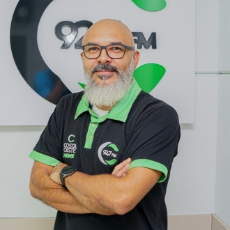
Ao vivoTocando agora em 92,7 FM
Show da Tarde
com Jeferson "Black"
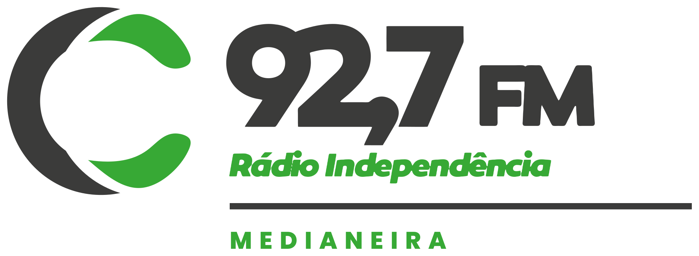
Ao vivo em Medianeira PR
Há mais de 45 anos levando informação, música e companhia para a sua casa. Somos a Rádio da Família, agora em 92,7 FM.

Ao vivoTocando agora em 92,7 FM
com Jeferson "Black"
Programação
Quem Somos
A Rádio Independência nasceu em 4 de dezembro de 1978, em Medianeira, e em pouco tempo levou sua programação para toda a Região Oeste do Paraná. Informação, jornalismo responsável e prestação de serviço, com uma equipe que virou família de quem ouve.
Conheça a história completa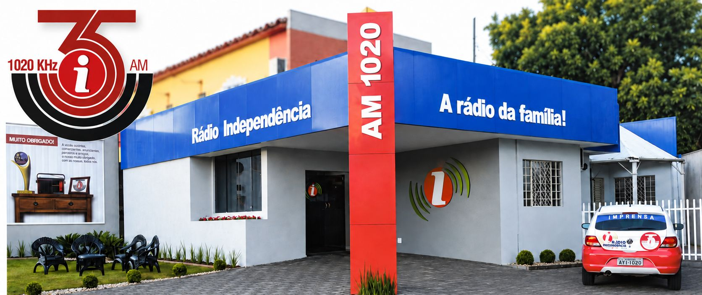
Começa na AM 1580 kHz, em Medianeira.
Moacir José Hanzen assume a emissora, já em 1020 kHz, e adota o slogan.
A Independência passa a operar em 92,7 FM.
A rádio mais ouvida do Oeste do Paraná.
Equipe
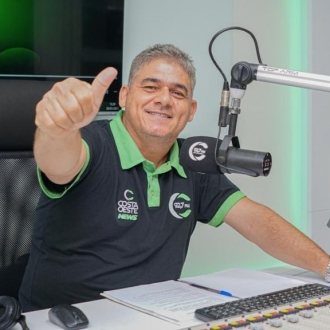
Locutor e Comercial
Amanhecer na Costa OesteProdutor e Locutor
Show da Tarde
Jornalista
Tudo Sob Controle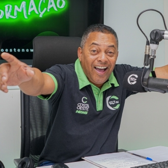
Locutor
Bom dia Costa Oeste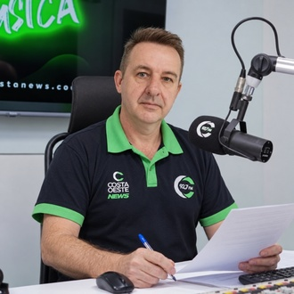
Locutor
Revista Costa Oeste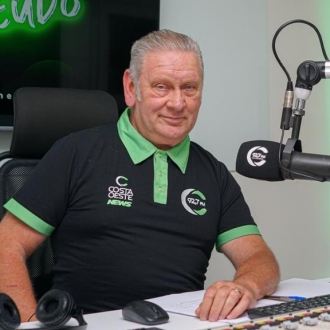
Locutor
Encontro de BandasLocutor
Chimarreando na Costa Oeste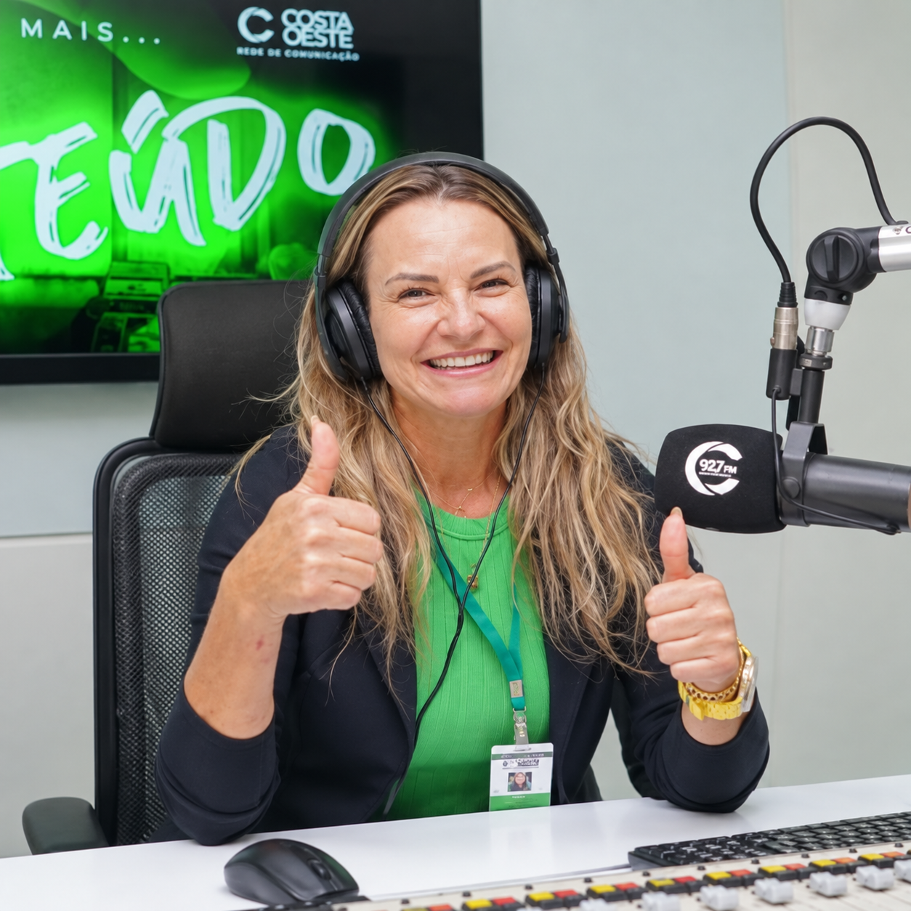
Diretora Geral
Direção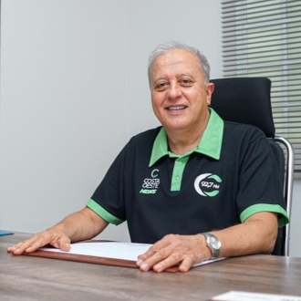
Gerente Geral
DireçãoCoordenadora
Coordenação da Rádio Independência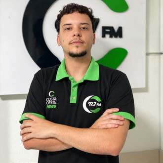
Secretário
Programação comercial e secretariaPeça uma música
Mande seu pedido com um recado. A gente toca pra você e pra quem você quiser.
Prefere o WhatsApp?
(45) 9 9935-8890Contato
Participe da programação, anuncie sua empresa ou tire suas dúvidas.
Av. Pedro Soccol, 452
São Cristóvão, Medianeira PR